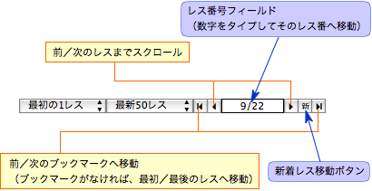

CocoMonar ヘルプ
CocoMonar ヘルプ
ヒントとコツ（その1）
CocoMonar をより快適に使うための便利な操作や、ヒントをいくつか紹介します。
スレッドの閲覧
レス移動ボタンとレス番号フィールドを使いこなせば、より快適にスレッドを閲覧することができます。
- レス番号フィールドをクリックして、番号をタイプします。次に、return キーを押します。すると、そのレス番号にすばやく移動できます。
- ブックマークしておいたレスに素早く移動するときは、レス移動ボタンが使えます。
- 新着レス移動ボタンをクリックすると、すぐに新着レスにジャンプできます。

キーボードでも様々な操作を行えます。メニュー項目のショートカットは、各メニュー項目の右横に表示されています。メニューに無い操作のショートカットをいくつか示します：
- スペースバー（shift キーを同時に押すと逆方向にスクロール）や、page down／page up キーで画面をスクロールできます。
- delete キーを押すと、そのスレッドのログをゴミ箱に入れます。
また、ログのテキストを選択して以下のようなこともできます：
- control キーを押しながらクリックしてコンテキストメニューを開きます。Google 検索やテキストのコピーができます。
- 「サービス」メニューを開いて、他のアプリケーションにテキストを渡すこともできます。
ポップアップ
- 長過ぎるポップアップで、見えない部分をスクロールするには、command キーを押しながらポップアップ内をドラッグします。または、「環境設定」でスクロールバーを表示させるように設定しておきます。
- 一時的に、マウスが離れてもポップアップが消えないようにしたい場合は、そのポップアップを一度クリックしてからキーボードの L キーを押します。ポップアップの背景色が変わり、ポップアップが「ロック」されます。ポップアップのロックを解除するには、もう一度 L キーを押します。
続きを見る